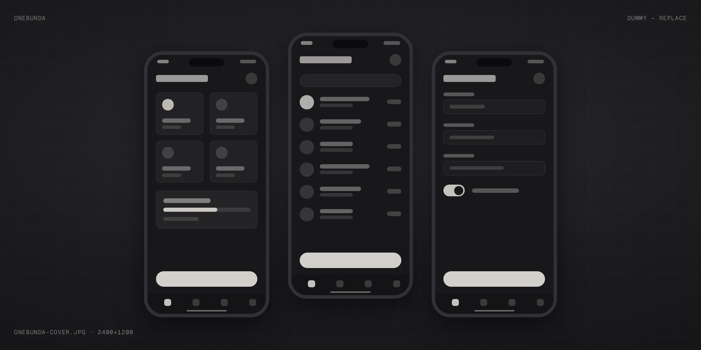
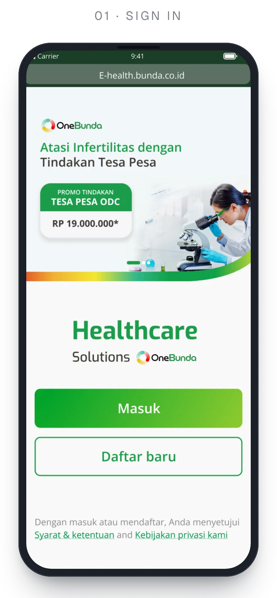
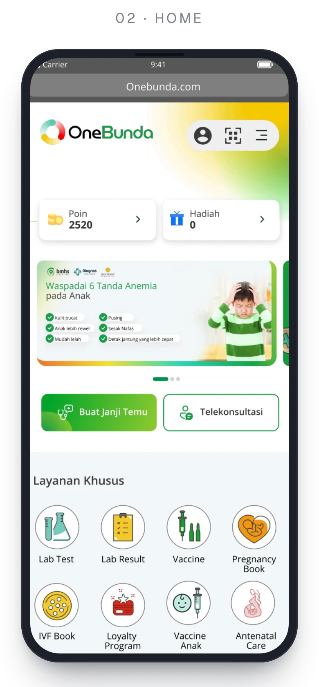
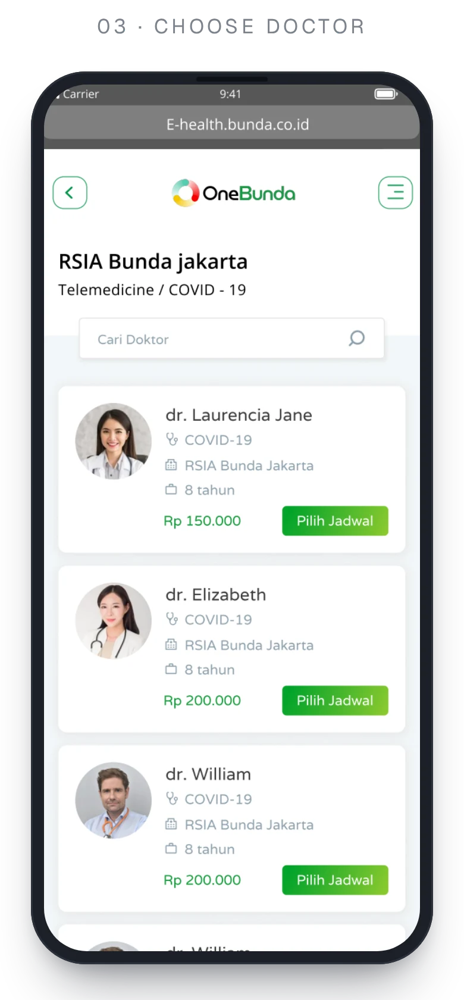
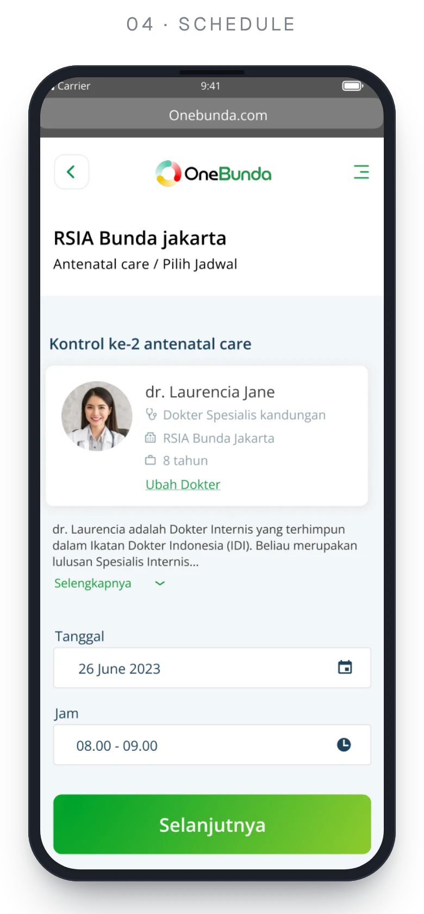
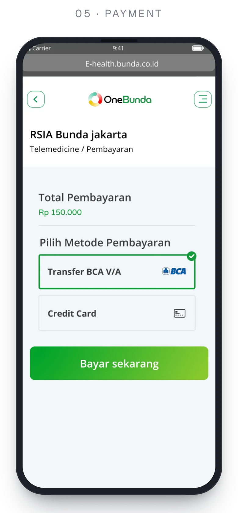
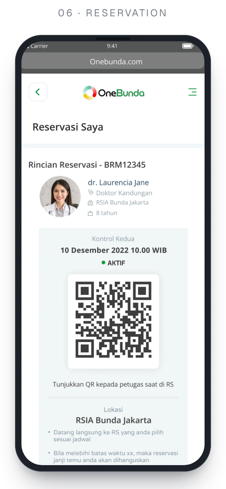
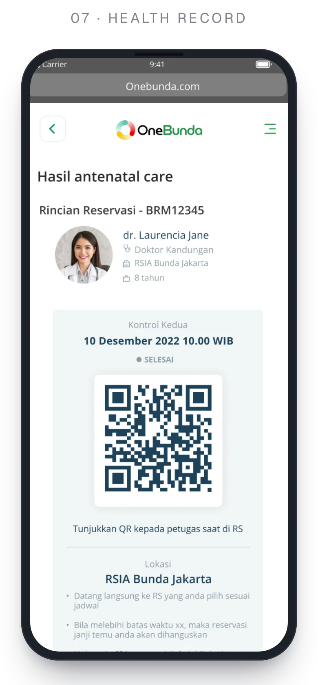
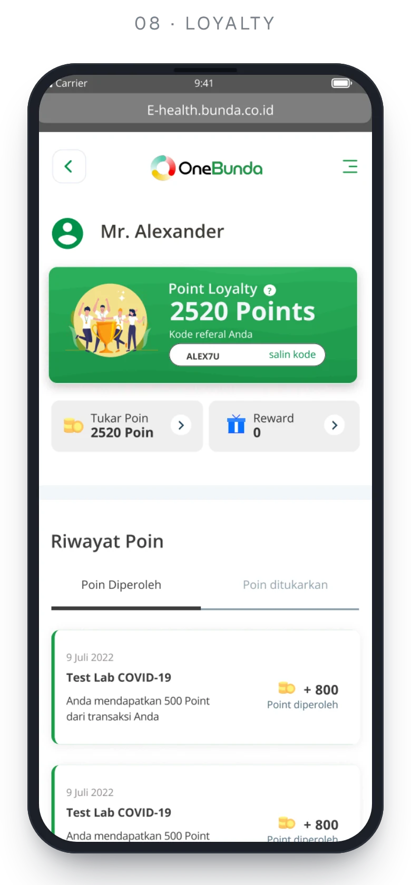

E-Health PWA
An end-to-end Progressive Web App (PWA) designed for a leading hospital group to streamline healthcare access — from digital doctor appointments and vaccination booking to electronic medical records and patient loyalty rewards.

[Cover image]Manual WhatsApp booking became a self-service app that patients actually use.
User engagement
A significant boost in digital activity and booking retention after the platform launch.
New registered users
Active users onboarded within the first quarter (3 months) of release.
Frictionless healthcare access
Manual appointment bookings shifted into a self-service, always-on digital booking channel.
Overview
OneBunda is the patient app of Bunda Group — RS Bunda hospitals, Morula IVF and Diagnos labs. It replaces a confusing eHealth experience with one place to register, book, pay and follow up on care.
The problem
Patient access to hospital services was heavily fragmented and reliant on manual channels like WhatsApp booking, leading to high drop-offs and operational inefficiencies.
Business pain points
Lacked integrated core features (doctor booking, vaccination scheduling, loyalty rewards) and had no direct sync with the hospital’s internal Health Information System (HIS).
Patient experience pain points
Booking appointments manually was confusing and time-consuming, while patient health records and rewards were untrackable online.
Who it’s for
Patients & families
Seeking quick, seamless online appointment booking, digital health tracking and rewards management across mobile and desktop devices.
Hospital care teams & staff
Requiring real-time synchronization between digital bookings and the internal hospital system (HIS) to streamline patient intake and schedule management.
What I designed
Digital doctor & vaccine booking
A streamlined 3-step scheduling flow for in-person consultations, teleconsultations and vaccination packages.
Integrated loyalty program
A point-earning and reward redemption ecosystem integrated directly into patient consultation activities to boost retention.
Health records & medical history
A central dashboard allowing patients to track consultation histories, prescriptions and lab results digitally.
Seamless HIS integration UI
System workflows aligned with backend hospital management systems to ensure real-time schedule syncing.
How I approached it
01 — Research & discovery
Mapped patient journeys, identified manual booking bottlenecks, and aligned business goals with hospital IT requirements.
02 — Ideation & user flow
Designed clear, frictionless booking and registration flows, eliminating unnecessary steps to improve completion rates.
03 — Wireframing to interactive prototyping
Built low-fidelity structures up to high-fidelity, component-driven PWA prototypes using a clean design system.
04 — Usability testing & iteration
Validated key task completion scenarios with real patients to refine edge cases prior to developer handoff.
Design process
UX design
- Research
- Problem statement
- Empathy map
- User persona
UI design
- Wireframing
- Lo-fi design
- Hi-fi design
- Prototype
User flow
The core patient journey, polished from the study case: sign in with WhatsApp, book a doctor for yourself or family, pay, and the booking lands in the hospital system — then the visit earns points to redeem.
- 01 · Patient
Open OneBunda
A progressive web app: nothing to install, the same experience on phone and desktop.
- 02 · PWA
Sign in
A phone number and a WhatsApp one-time code. New patients register in one short form.
- 03 · PWA
Home
Nine core services in one place.
AppointmentLab testVaccineAntenatal careLoyalty+4 more - 04 · Patient
Facility & doctor
Pick a facility, a hospital and a doctor. On the first visit, a quick ID check with KTP or passport.
RS BundaMorula IVFDiagnos - 05 · Patient
Date & time
Choose a slot, for yourself or a family member. Doctor schedules come live from the hospital system (HIS).
- 06 · Payment
Confirm & pay
Check the details and the fee, then pay by virtual account or card. A failed payment can be retried right away.
BCA virtual accountCredit card - 07 · Hospital · HIS
Synced to HIS
The booking reaches the hospital system (Teramedik) in real time and the patient gets a reservation QR.
- 08 · Hospital · HIS
Check in
Show the QR at the hospital counter.
- 09 · PWA
Points & records
Every visit earns loyalty points; consultation history, prescriptions and lab results stay in one place.
- 10 · Patient
Redeem
Swap points for vouchers and claim them with a QR code.
Flowchart
Under the hood: the booking logic that keeps the PWA and the hospital system in step — every check, retry and dead end a request can hit between “book” and check-in.
- 01 · Patient
Book a visit
The request starts from Home or a doctor’s profile.
- 02 · PWA
Signed in?
If not, the patient signs in with a WhatsApp one-time code first.
Yes → continueNo → OTP sign-in - 03 · HIS
Pick a slot
Doctor schedules are read live from the hospital system.
- 04 · HIS
Slot still free?
If someone took it in the meantime, the app suggests the next free time.
- 05 · Payment
Create invoice
Virtual account or credit card.
- 06 · Payment
Paid in time?
If not, the reservation expires and the slot is released.
- 07 · HIS
Write to HIS
The booking is written to Teramedik.
- 08 · HIS
Synced?
A failed write is queued and retried automatically.
- 09 · PWA
Issue QR
A reservation QR plus a push notification.
- 10 · Patient
Check in · points
The QR is scanned at the counter and loyalty points are credited.
9 core services
- 01Make an appointment
- 02Lab test
- 03Lab result
- 04Vaccine
- 05Pregnancy book
- 06Morula IVF book
- 07Antenatal care
- 08Kids vaccination
- 09Loyalty program
Key flows
Sign in with WhatsApp
Log in with a phone number and a one-time code. New patients register in one short form.
Book a doctor
Pick a facility, hospital, doctor and time — for yourself or family — then pay by virtual account or card.
Antenatal care
A pregnancy timeline by trimester, recommended check-ups, QR check-in, doctor’s notes and weekly baby-size milestones.
Kids vaccination
Child profiles with a vaccination schedule and booking in a few taps.
Lab tests & results
Choose a test and a location, book a slot, then download the results.
Loyalty & rewards
Earn points from every transaction, redeem vouchers and claim them with a QR code at the counter.
Screens
A showcase of core end-to-end flows across the PWA ecosystem, including Patient Onboarding/Registration, Doctor Consultation Search, Flexible Appointment Scheduling, Medical Records View and Loyalty Rewards Dashboard.
With 50+ screens designed across the patient app, only a selection is shown here.








Interactive prototype
The clickable Figma prototype of the patient app — sign in, book a doctor, pay and check in.
Tap through the real flow.
The clickable prototype, straight from Figma. It loads here only when you ask for it.